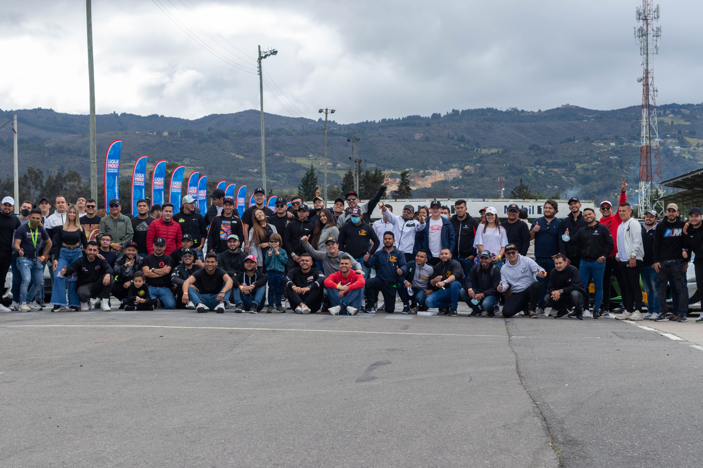

SupercarsClub


Incognito Club
SupercarsClub
Incognito Club
Nuestro trabajo se ha realizado junto a grandes marcas a nivel Colombia, tales como Porsche, BMW, Mini, Chevrolet, Nissan y Ford. Además hemos trabajado con distintos clubs en el pais, donde de allí se abren las posibilidades de tener contacto con los propietarios de los vehiculos, a destacar que hemos trabajado con vehiculos y motos unicas en el pais, o que cuentan con muy pocas unidades y son poco usuales de ver, muchas de estas no son visibles por acuerdos de privacidad con los clientes.